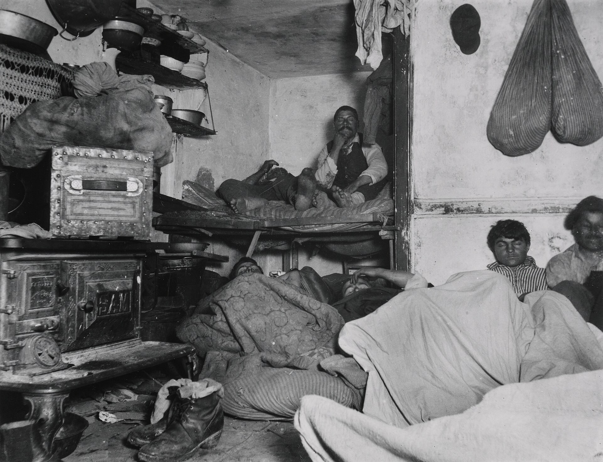

Total: 50 points. Part 1 is worth 15 points, Part 2 is worth 20 points, Part 3 is worth 15 points. Write answers on this test. For Part 3, answer in complete sentences and cite the sources by letter.
Match each term to its description. Each description is used once.
| ___ | 1. standard time | A. the 1887 federal law that divided reservation land into individual allotments and sold surplus land to non-Native buyers |
| ___ | 2. Bessemer process | B. paid work by children, often in factories, mines, mills, and street trades |
| ___ | 3. trust | C. a system of uniform time zones that replaced local solar time |
| ___ | 4. Social Darwinism | D. the proposal to coin silver without limit at a ratio of 16 to 1 with gold, expanding the money supply |
| ___ | 5. child labor | E. a combination of corporations that limits competition within an industry |
| ___ | 6. injunction | F. a crowded, often unsafe multi-family apartment building in a city |
| ___ | 7. Chinese Exclusion Act | G. the 1896 Supreme Court decision that upheld segregation under the doctrine of separate but equal |
| ___ | 8. tenement | H. a method for making steel quickly and cheaply by blowing air through molten iron |
| ___ | 9. graft | I. state laws of the 1870s, won by organized farmers, that regulated railroad and warehouse rates |
| ___ | 10. Homestead Act | J. a court order that requires or forbids a specific action |
| ___ | 11. Dawes Act | K. the 1862 law offering a claim of up to 160 acres of public land to settlers who lived on the claim and improved it for five years |
| ___ | 12. Plessy v. Ferguson | L. the argument that wealth and power show natural fitness and that government aid distorts competition |
| ___ | 13. Atlanta Compromise | M. Booker T. Washington's 1895 speech proposing that Black southerners accept segregation for the present and build economic strength first |
| ___ | 14. Granger laws | N. the illegal use of political power for personal profit, such as kickbacks and bribes |
| ___ | 15. free silver | O. the 1882 federal law that suspended Chinese labor immigration and barred Chinese residents from naturalized citizenship |
1. The growth of the railroad network created one national market chiefly because railroads
A. were owned and operated by the federal governmentB. carried heavy loads in all seasons at a fraction of the cost of wagon transportC. set a single national price for farm and factory goodsD. ended competition among local sellers by law
2. The Bessemer process changed the steel industry by
A. ending the need for iron ore in steelmakingB. replacing coal and coke with electricity in every furnaceC. allowing rails to be cast from wood pulp and iron filingsD. making steel by the ton in minutes, as air blown through molten iron burned out impurities
3. In 1895 the Supreme Court refused to break up a sugar combination controlling about 98 percent of the nation's sugar refining, holding that
A. the Sherman Antitrust Act had expired in 1894B. sugar, as a food, was exempt from federal lawC. manufacturing was not trade between the statesD. trusts were protected by the First Amendment
4. Which statement states the Social Darwinist argument as the lesson presents it?
A. Wealth and power show natural fitness, and government aid distorts competition and weakens societyB. Secret railroad rebates made competition unfair, so government had to regulate businessC. Charles Darwin taught that Congress should not regulate businessD. Holders of large fortunes owed the public libraries and universities in return for their success
5. The census of 1900 counted about 1.75 million children ages 10 to 15 in paid work, about one child in five. One reason so many children worked was that
A. federal law required children to work until age fifteenB. one adult wage, on the order of a few hundred dollars a year, often could not cover rent, food, fuel, and clothing for a familyC. public schools charged tuition that most families could not payD. employers were forbidden to hire workers over the age of forty
6. The Pullman strike and boycott of 1894 were ended chiefly when
A. George Pullman agreed to restore the wage cuts and lower rents in his company townB. the federal government bought the Pullman works and ran them as a public projectC. a federal court issued an injunction against the union and President Cleveland sent federal troopsD. the American Federation of Labor ordered its members to return to work
7. Processing at Angel Island differed from processing at Ellis Island mainly because Chinese arrivals
A. had to prove a legal right to enter under the Chinese Exclusion Act and were held for weeks or months while officials checked their claimsB. were inspected by the government of California rather than by federal officialsC. were admitted without any medical examinationD. arrived on ships that carried no passenger manifest
8. In How the Other Half Lives (1890), Jacob Riis presented tenement poverty as
A. a result of tenants refusing the services the city offered themB. proof that new immigrants could not learn American customsC. a failure of character that private charity alone could cureD. a condition of housing and health, documented in photographs of crowded rooms without light or ventilation
9. A political machine held power in a city mainly by
A. delivering jobs, help, and favors to neighborhoods in return for votesB. winning court orders that banned rival parties from the ballotC. owning the city's factories, railroads, and newspapersD. requiring every voter to pass a literacy test graded by the boss
10. A settler earned full title to a homestead claim of up to 160 acres only after
A. paying the full market price for the land in goldB. serving two years in a territorial militiaC. paying a filing fee and living on the claim and improving it for five yearsD. selling the first five harvests to the railroad that held the land grant
11. Under the Dawes Act of 1887, reservation land left over after individual allotments, called surplus land, was
A. returned to tribal governments to hold in commonB. sold to non-Native buyersC. set aside permanently as national forestD. divided among the boarding schools for their support
12. Poll taxes, literacy tests, and grandfather clauses worked together in the South to
A. disfranchise Black voters while protecting white voters, without naming race in the devices themselvesB. raise the money that paid for segregated schoolsC. enforce the separate but equal doctrine in railroad carsD. register new immigrants who settled in southern cities
13. In Southern Horrors (1892), Ida B. Wells used names, dates, and newspaper records to argue that lynching
A. followed fair trials in nearly every case she examinedB. punished only men proven guilty of serious crimesC. served economic competition and racial control, and many victims had committed no crimeD. had ended in most southern states by 1892
14. In the 1870s, farmers organized through the Grange won Granger laws that
A. regulated railroad and warehouse rates at the state levelB. set one national price for wheat and cottonC. banned railroads from owning grain elevators in every stateD. required the coinage of silver at a ratio of 16 to 1
15. William Jennings Bryan lost the election of 1896 in part because
A. the Populist Party nominated its own candidate against himB. the Supreme Court barred Bryan from campaigning outside the SouthC. free silver was struck from the Democratic platform at the conventionD. William McKinley, backed by business money, won urban workers who feared inflation
16. On November 18, 1883, the railroads adopted standard time in order to
A. obey a federal law requiring one national clockB. replace local solar time with four uniform time zones, so schedules and connections could work across linesC. shorten the working day in railroad townsD. match the time system already used by European railroads
17. The trust device, as John D. Rockefeller's lawyers organized Standard Oil in 1882, worked by
A. asking Congress to charter a single national oil corporationB. dividing Standard Oil into competing firms owned by their workersC. merging every refinery into one factory in OhioD. stockholders handing their shares to trustees, who ran the member companies as one enterprise, setting one price and dividing markets
18. The Knights of Labor differed from the American Federation of Labor in that the Knights
A. organized only skilled workers, each trade in its own separate unionB. refused to support the eight-hour dayC. organized many kinds of workers in one order and sought broad reform, including an end to child laborD. built dues and strike funds and avoided all political demands
19. Between 1887 and 1934, the overall effect of the allotment policy on Native landholding was that
A. Native nations gained land through the sale of surplus parcelsB. Native landholding held steady at about 138 million acresC. the policy was repealed in 1900 after a brief trialD. about 90 million acres passed out of Native hands
20. The Populist program outlived the Populist Party, which collapsed after 1896, because
A. the Populists won the presidency in 1900B. President McKinley adopted free silver as Republican policyC. many Populist demands, including railroad regulation, a graduated income tax, and the direct election of senators, later became Progressive reformsD. the Omaha Platform was written into the Constitution in 1897
Source A. Omaha Platform of the People's Party, July 4, 1892
"The conditions which surround us best justify our co-operation; we meet in the midst of a nation brought to the verge of moral, political, and material ruin. Corruption dominates the ballot-box, the Legislatures, the Congress, and touches even the ermine of the bench. ... The newspapers are largely subsidized or muzzled, public opinion silenced, business prostrated, homes covered with mortgages, labor impoverished, and the land concentrating in the hands of capitalists. ... The fruits of the toil of millions are boldly stolen to build up colossal fortunes for a few, unprecedented in the history of mankind; and the possessors of those, in turn, despise the republic and endanger liberty."
The platform's Finance plank demands: "We demand free and unlimited coinage of silver and gold at the present legal ratio of 16 to 1."
Its Transportation plank states: "Transportation being a means of exchange and a public necessity, the government should own and operate the railroads in the interest of the people."
Text as printed in The World Almanac, 1893, and reprinted in George Brown Tindall, ed., A Populist Reader (New York: Harper and Row, 1966). Cuts are marked with ellipses.
A1. (2 points) According to the preamble in Source A, what two conditions does the People's Party name as signs that the nation is near ruin?
A2. (3 points) Explain how each of the two demands quoted in Source A, government ownership of the railroads and free and unlimited coinage of silver and gold at 16 to 1, answered a grievance of farmers in the 1890s.
Source B. Lodgers in a Crowded Bayard Street Tenement, New York City

Photograph by Jacob A. Riis, 1889, published in How the Other Half Lives (1890). The lodging was known by its price, "Five Cents a Spot." Library of Congress, Prints and Photographs Division.
B1. (2 points) Describe two conditions visible in Source B, and state the health danger each condition created.
B2. (3 points) Riis published this photograph for middle-class readers. Explain what a reformer in 1890 could argue from this image about the limits of private charity, and name one city action from the lesson that such evidence supported.
Source C. The General Allotment Act (Dawes Act), February 8, 1887, Sections 1 and 6
Section 1: "That in all cases where any tribe or band of Indians has been, or shall hereafter be, located upon any reservation created for their use ... the President of the United States be, and he hereby is, authorized, whenever in his opinion any reservation or any part thereof ... is advantageous for agricultural and grazing purposes, to cause said reservation, or any part thereof, to be surveyed, or resurveyed if necessary, and to allot the lands in said reservation in severalty to any Indian located thereon in quantities as follows: To each head of a family, one-quarter of a section; To each single person over eighteen years of age, one-eighth of a section; ..."
Section 6: "... every Indian born within the territorial limits of the United States who has voluntarily taken up, within said limits, his residence separate and apart from any tribe of Indians therein, and has adopted the habits of civilized life, is hereby declared to be a citizen of the United States ..."
General Allotment Act, February 8, 1887 (24 Stat. 388). Cuts are marked with ellipses.
C1. (2 points) According to Source C, who decides that a reservation will be allotted, and what quantity of land does a head of a family receive?
C2. (3 points) Explain how the language of Section 6 in Source C shows that the Dawes Act was an assimilation policy and not only a land policy. Then state the documented result for Native landholding by 1934.
Part 1. 1-C [1], 2-H [2], 3-E [3], 4-L [4], 5-B [5], 6-J [6], 7-O [7], 8-F [8], 9-N [9], 10-K [10], 11-A [11], 12-G [12], 13-M [13], 14-I [14], 15-D [15].
Part 2. 1-B [1], 2-D [2], 3-C [3], 4-A [4], 5-B [5], 6-C [6], 7-A [7], 8-D [8], 9-A [9], 10-C [10], 11-B [11], 12-A [12], 13-C [13], 14-A [14], 15-D [15], 16-B [1], 17-D [3], 18-C [6], 19-D [11], 20-C [15].
Part 3.
A1. Any two, one point each: corruption dominates the ballot-box, the Legislatures, the Congress, and the courts; newspapers are subsidized or muzzled and public opinion silenced; business is prostrated and homes are covered with mortgages; labor is impoverished; the land is concentrating in the hands of capitalists; the fruits of the toil of millions are stolen to build colossal fortunes for a few. [14]
A2. Three points. Railroads (1 point): farmers shipped every crop on railroads whose rates they could not control, and the preamble counts concentrated corporate power among the nation's ruin; public ownership would place the system farmers depended on under public control in the interest of the people. Silver (1 point): free and unlimited coinage at 16 to 1 would expand the money supply and end the deflation that made each dollar of farm debt heavier while crop prices fell. Link (1 point): the answer ties at least one demand directly to a condition named in the preamble, such as mortgages, impoverished labor, or land concentrating in the hands of capitalists. [14]
B1. Any two, one point each, observation tied to its danger. Many lodgers are packed into one small room, sleeping side by side on the floor and on benches, so disease, above all tuberculosis, spread through shared air. The room is the whole lodging, with sleepers in their clothes on bare boards and no washing or clean water space in the room, the conditions in which contaminated water and crowding produced typhoid and tuberculosis in the lesson. Accept any two accurate observations from the photograph, each paired with a health danger taught in Lesson 5. [8]
B2. Three points. Argument (2 points): the photograph shows a condition produced by wages, rents, and an uninspected housing market, repeated in thousands of rooms across the city; charity could relieve one room for one night and leave the system that filled it untouched, so the remedy had to be public and general. City action (1 point): any one from the lesson, such as tenement inspection and housing rules, a professional sanitation department of the kind George Waring ran in New York from 1895, settlement house pressure that won playgrounds, bathhouses, and factory inspection, or a reform administration such as Mayor William Strong's in New York in 1894. [8]
C1. The President decides: the act authorizes him, whenever in his opinion a reservation or part of one is advantageous for agricultural and grazing purposes, to have it surveyed and allotted (1 point). A head of a family receives one-quarter of a section (1 point). [11]
C2. Three points. Assimilation in the text (2 points): Section 6 makes citizenship follow from leaving tribal life, declaring a citizen of a person who has taken up residence separate and apart from any tribe and has adopted the habits of civilized life; the statute thus treats tribal membership and full citizenship as opposites and aims to end Native peoples as distinct peoples, which is the assimilation policy of Lesson 7 stated in the law itself. Land result (1 point): Native nations held about 138 million acres in 1887, and about 90 million of those acres had passed out of Native hands by 1934. [11]
Every item above carries its blueprint entry number in brackets. The table counts those tags: Part 1 has one item per entry, Part 2 questions 1 to 15 follow the entries in order with questions 16 to 20 adding a third assessment to entries 1, 3, 6, 11, and 15, and Part 3 questions are tagged to the entries their sources assess. Every entry is assessed at least twice.
| Entry | Blueprint entry | Part 1 | Part 2 | Part 3 | Total |
|---|---|---|---|---|---|
| 1 | Railroads and the making of a national market | 1 | 2 | 0 | 3 |
| 2 | Steel, oil, invention, and industrial scale | 1 | 1 | 0 | 2 |
| 3 | Trusts, monopoly, and the Sherman Antitrust Act | 1 | 2 | 0 | 3 |
| 4 | Laissez-faire, Social Darwinism, and their critics | 1 | 1 | 0 | 2 |
| 5 | Industrial work, wages, and child labor | 1 | 1 | 0 | 2 |
| 6 | Unions and the great strikes: Haymarket, Homestead, and Pullman | 1 | 2 | 0 | 3 |
| 7 | New immigration, Ellis Island, Angel Island, and restriction | 1 | 1 | 0 | 2 |
| 8 | Urban growth, tenements, sanitation, and daily life | 1 | 1 | 2 | 4 |
| 9 | Political machines, graft, and early city reform | 1 | 1 | 0 | 2 |
| 10 | Mining, cattle, farming, and the commercial West | 1 | 1 | 0 | 2 |
| 11 | Native American dispossession, the Dawes Act, assimilation, and Wounded Knee | 1 | 2 | 2 | 5 |
| 12 | Jim Crow, Plessy v. Ferguson, and disfranchisement | 1 | 1 | 0 | 2 |
| 13 | Black protest and leadership: Ida B. Wells and Booker T. Washington | 1 | 1 | 0 | 2 |
| 14 | Farmers' grievances, Granger laws, and Populism | 1 | 1 | 2 | 4 |
| 15 | Free silver, Bryan, the election of 1896, and the road to Progressivism | 1 | 2 | 0 | 3 |